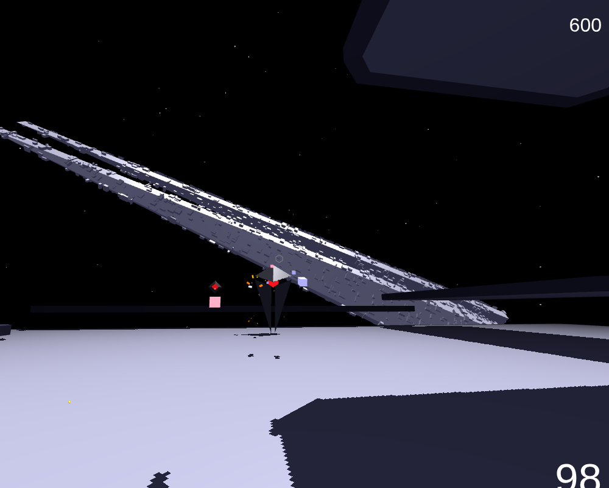
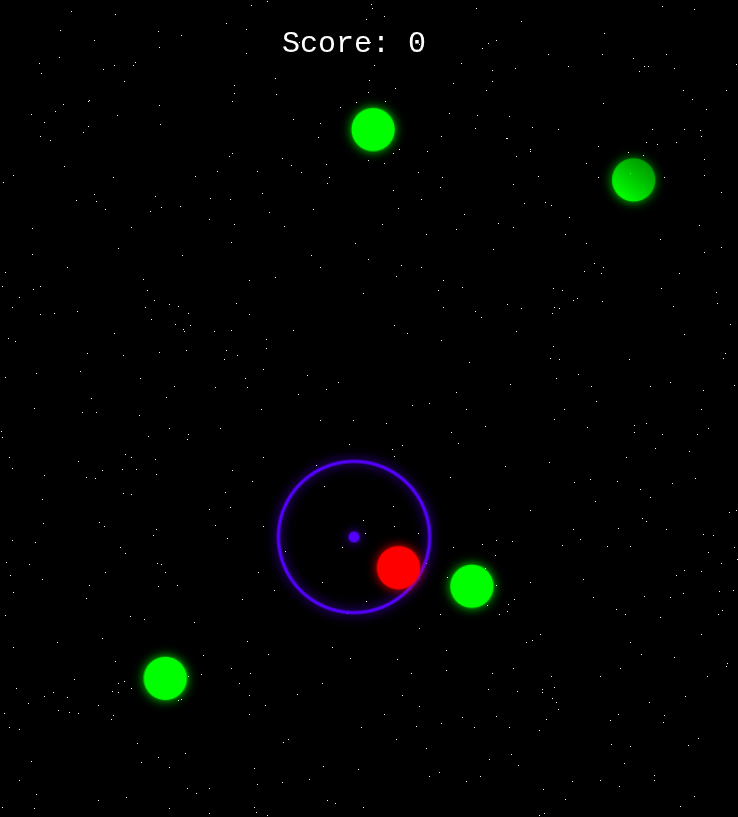

Découvrez nos deux jeux rétro, Two Ships Passing In The Night et Space Invaders, développés avec passion et déployés grâce à notre pipeline CI/CD.

Affrontez des vagues d'ennemis fonçant sur vous. Utilisez votre souris pour viser et tirer, tout en vous manœuvrant avec les touches fléchées pour échapper au chaos spatial.
LANCER LE JEU
Posté au centre de la zone, vous êtes le dernier rempart. Pivotez et tirez à la souris pour éliminer les menaces surgissant de tous les côtés dans cette version survie du grand classique.
LANCER LE JEU